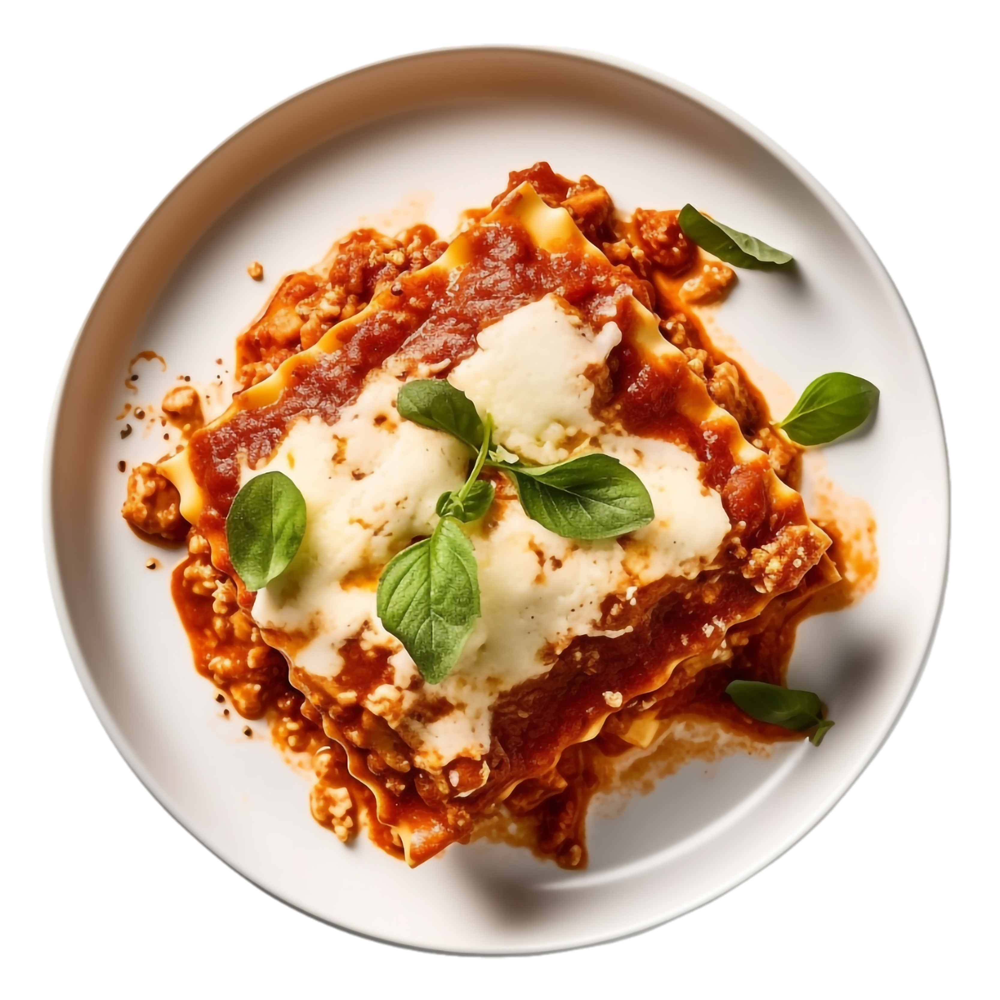

Lasagna

Ingredients
- 1 lb Ground Beeg
- 12 Lasagna Noodles
- 24 oz Marinara Sause
- 15 oz Ricotta Cheese
- 2 cups Shredded Mozzarella
- 1/2 cup Grated Parmasan
- 1 Egg
- Salt and Pepper, to taste.
Preparation
- Preheat oven to 375°F (190°C).
-
Cook lasagna noodles according to package instructions, then drain.
- In a pan, brown the ground beef and mix in the marinara sauce.
- In a bowl, combine ricotta, egg, and half the parmesan.
-
Layer noodles, meat sauce, ricotta mixture, and mozzarella in a baking
dish. Repeat.
- Top with remaining mozzarella and parmesan.
- Bake for 45 minutes, until golden and bubbling.
- Let rest 10 minutes before serving.